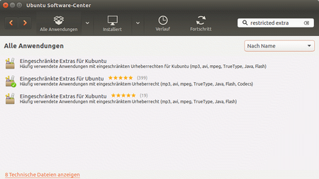

ubuntu-restricted-extras
Dieser Artikel wurde für die folgenden Ubuntu-Versionen getestet:
Ubuntu 16.04 Xenial Xerus
Ubuntu 14.04 Trusty Tahr
Zum Verständnis dieses Artikels sind folgende Seiten hilfreich:
Es ist mitunter mühselig, alle möglichen Codecs zu installieren, nur um Videos und Musik aus jeder beliebigen Quelle ohne Probleme abspielen zu können. Programme wie Totem oder Kaffeine suchen mittlerweile eigenständig nach dem entsprechenden Multimediacodec - es geht jedoch noch einfacher. Um die am häufigsten verwendeten Multimediacodecs einfach und schnell installieren zu können, hat man dafür ein Metapaket [1] zusammengestellt. Michael Vogt hat 2006 unter dem Paketnamen ubuntu-restricted-extras die erste Version in die Paketquellen hochgeladen. Seit dem ist dieses Metapaket ständig an die sich ändernden Anforderungen angepasst worden.
Durch dieses Metapaket werden viele Codecs installiert, die aus lizenzrechtlichen Gründen nicht in einer Standardinstallation enthalten sind. Nach Installation des Metapaketes kann man MP3, AVI, MPEG etc. wiedergeben. Zusätzlich zu den Codecs werden inzwischen auch Microsoft Windows Schriften, Flash- und RAR-Unterstützung installiert. Es lässt sich also eine Menge Arbeit sparen. Allerdings ist man danach immer noch nicht in der Lage, verschlüsselte DVDs abzuspielen. Dazu bitte den Artikel Codecs zu Rate ziehen, ebenso für die Unterstützung von weiteren Abspielformaten.
Proprietäre Programme und Pakete aus multiverse unterliegen in einigen Ländern Beschränkungen durch Copyright oder Lizenzierungen ( Weitere Informationen
Weitere Informationen  ).
).
Hinweis:
Java ist kein Bestandteil der restricted-extras mehr. Das betrifft sowohl die eigentliche Laufzeitumgebung (JRE) als auch das Browser-Plugin. Bei Bedarf Java separat installieren.
Bitte während der Installation beachten: Die "Microsoft Windows Schriften" benötigen die Zustimmung zu den Lizenzbedingungen. Dazu im Installationsverlaufs-Fenster die Details anzeigen lassen, mit den Pfeiltasten in der Eula nach unten blättern, mit der Taste Tab ⇆ zum OK-Feld springen und mit ⏎ bestätigen.
Installation und enthaltene Pakete¶
Ubuntu¶
Installation per Software-Center (bis Ubuntu 14.04 Trusty Tahr)¶
Zu finden ist das Metapaket durch die Eingabe "restricted extras" in das Eingabefeld. Die Unterschiede zwischen den einzelnen Metapaketen kann man der unten aufgeführten Tabelle entnehmen.
|  |
| per Software-Cente bis Ubuntu 14.04 Trusty Tahr |
Installation per Paketverwaltung¶
Alternativ kann man über die Paketverwaltung auch folgendes Paket installieren [2], was allerdings nicht über Ubuntu Software funktioniert:
ubuntu-restricted-extras (multiverse)
 mit apturl
mit apturl
Paketliste zum Kopieren:
sudo apt-get install ubuntu-restricted-extras
sudo aptitude install ubuntu-restricted-extras
Dieses Metapaket wird folgende Einzelpakete installieren:
| ubuntu-restricted-extras | |||
| Zweck | Paketname | Ubuntu 14.04 | Ubuntu 16.04 |
| Codecs für Chromium | chromium-codecs-ffmpeg-extra | ||
| Adobe Flash Browser-Plugin (NPAPI ) | flashplugin-installer | ||
| Codecs für GStreamer | gstreamer0.10-ffmpeg | ||
| Codecs für GStreamer | gstreamer0.10-fluendo-mp3 | ||
| Codecs für GStreamer | gstreamer0.10-plugins-bad | ||
| Codecs für GStreamer | gstreamer0.10-plugins-ugly | ||
| Codecs für GStreamer | gstreamer0.10-plugins-bad-multiverse | ||
| Codecs für GStreamer | gstreamer1.0-libav | ||
| Codecs für GStreamer | gstreamer1.0-fluendo-mp3 | ||
| Codecs für GStreamer | gstreamer1.0-plugins-bad | ||
| Codecs für GStreamer | gstreamer1.0-plugins-ugly | ||
| Libav Codecs | libavcodec-extra-53 | ||
| Libav Codecs | libavcodec-extra | ||
| Codecs für Web Apps | oxideqt-codecs-extra | ||
| Microsoft Windows Schriften | ttf-mscorefonts-installer | ||
| Entpacker für .rar-Dateien (unfreie Version) | unrar | ||
Da sich die Inhalte mit jeder Ubuntu-Versionen ändern können, hier noch der Link zur Paketsuche: ubuntu-restricted-extras

Kubuntu¶
Für Kubuntu heißt das Paket [2]:
kubuntu-restricted-extras (multiverse)
mit apturl
Paketliste zum Kopieren:
sudo apt-get install kubuntu-restricted-extras
sudo aptitude install kubuntu-restricted-extras
Dieses Metapaket wird folgende Einzelpakete installieren:
| kubuntu-restricted-extras | |||
| Zweck | Paketname | Kubuntu 14.04 | Kubuntu 16.04 |
| Codecs für Chromium | chromium-codecs-ffmpeg-extra | ||
| Adobe Flash Browser-Plugin (NPAPI ) | flashplugin-installer | ||
| Codecs für GStreamer | gstreamer0.10-ffmpeg | ||
| Codecs für GStreamer | gstreamer0.10-fluendo-mp3 | ||
| Codecs für GStreamer | gstreamer0.10-plugins-bad | ||
| Codecs für GStreamer | gstreamer0.10-plugins-ugly | ||
| Codecs für GStreamer | gstreamer0.10-plugins-bad-multiverse | ||
| Codecs für GStreamer | gstreamer1.0-libav | ||
| Codecs für GStreamer | gstreamer1.0-plugins-bad | ||
| Codecs für GStreamer | gstreamer1.0-plugins-ugly | ||
| LAME (MP3-Encoder) | lame | ||
| Libav Codecs | libavcodec-extra-53 | ||
| Libav Codecs | libavcodec-extra | ||
| DVD-Wiedergabe | libdvdread4 | ||
| Codecs für K3b | libk3b6-extracodecs | ||
| LAME (MP3-Encoder) | libmp3lame0 | ||
| Codecs für Web Apps | oxideqt-codecs-extra | ||
| Microsoft Windows Schriften | ttf-mscorefonts-installer | ||
| Entpacker für .rar-Dateien (unfreie Version) | unrar | ||
Da sich die Inhalte mit jeder Kubuntu-Versionen ändern können, hier noch der Link zur Paketsuche: kubuntu-restricted-extras
Xubuntu¶
Für Xubuntu heißt das Paket [2]:
xubuntu-restricted-extras (multiverse)
mit apturl
Paketliste zum Kopieren:
sudo apt-get install xubuntu-restricted-extras
sudo aptitude install xubuntu-restricted-extras
Dieses Metapaket wird folgende Einzelpakete installieren:
| xubuntu-restricted-extras | |||
| Zweck | Paketname | Xubuntu 14.04 | Xubuntu 16.04 |
| Adobe Flash Browser-Plugin (NPAPI ) | flashplugin-installer | ||
| Codecs für GStreamer | gstreamer0.10-ffmpeg | ||
| Codecs für GStreamer | gstreamer0.10-fluendo-mp3 | ||
| Codecs für GStreamer | gstreamer0.10-plugins-bad | ||
| Codecs für GStreamer | gstreamer0.10-plugins-ugly | ||
| Codecs für GStreamer | gstreamer0.10-plugins-bad-multiverse | ||
| Codecs für GStreamer | gstreamer1.0-libav | ||
| Codecs für GStreamer | gstreamer1.0-fluendo-mp3 | ||
| Codecs für GStreamer | gstreamer1.0-plugins-bad | ||
| Codecs für GStreamer | gstreamer1.0-plugins-ugly | ||
| Libav Codecs | libavcodec-extra-53 | ||
| Libav Codecs | libavcodec-extra | ||
| Microsoft Windows Schriften | ttf-mscorefonts-installer | ||
| Entpacker für .rar-Dateien (unfreie Version) | unrar | ||
Da sich die Inhalte mit jeder Xubuntu-Version ändern können, hier noch der Link zur Paketsuche: xubuntu-restricted-extras
Lubuntu¶
Während es für Ubuntu 14.04 keine separates Paket mehr gibt (bei Bedarf installiert man das Paket ubuntu-restricted-extras), wird für Lubuntu 12.04 das folgende Paket [2] benötigt:
lubuntu-restricted-extras (multiverse)
mit apturl
Paketliste zum Kopieren:
sudo apt-get install lubuntu-restricted-extras
sudo aptitude install lubuntu-restricted-extras
Dieses Metapaket wird folgende Einzelpakete installieren:
| lubuntu-restricted-extras | |||
| Zweck | Paketname | Lubuntu 14.04 | Lubuntu 16.04 |
| Codecs für Chromium | chromium-codecs-ffmpeg-extra | ||
| Adobe Flash Browser-Plugin (NPAPI ) | flashplugin-installer | ||
| Codecs für GStreamer | gstreamer0.10-fluendo-mp3 | ||
| Codecs für GStreamer | gstreamer0.10-plugins-bad | ||
| Codecs für GStreamer | gstreamer0.10-plugins-ugly | ||
| Codecs für GStreamer | gstreamer1.0-libav | ||
| Codecs für GStreamer | gstreamer1.0-fluendo-mp3 | ||
| Codecs für GStreamer | gstreamer1.0-plugins-bad | ||
| Codecs für GStreamer | gstreamer1.0-plugins-ugly | ||
| Libav Codecs | libavcodec-extra-53 | ||
| Libav Codecs | libavcodec-extra | ||
| Codecs für Web Apps | oxideqt-codecs-extra | ||
| Microsoft Windows Schriften | ttf-mscorefonts-installer | ||
| Entpacker für .rar-Dateien (unfreie Version) | unrar | ||
Da sich die Inhalte mit jeder Lubuntu-Version ändern können, hier noch der Link zur Paketsuche: lubuntu-restricted-extras
Links¶
Codecs - Multimedia-Formate
Informationen zu unfreien Formaten in der Ubuntu-Community-Dokumentation
- Erstellt mit Inyoka
-
 2004 – 2017 ubuntuusers.de • Einige Rechte vorbehalten
2004 – 2017 ubuntuusers.de • Einige Rechte vorbehalten
Lizenz • Kontakt • Datenschutz • Impressum • Serverstatus -
Serverhousing gespendet von